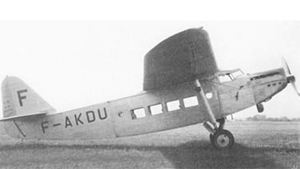

D.30

- Разработчик: Caudron
- Страна: Франция
- Первый полет: 1931
- Тип: Транспортный самолет
D.30 - транспортный самолет, разработанный французской компанией Dewoitine. Цельнометаллический высокоплан Dewoitine D.30 был пассажирским транспортным самолетом‚ совершившим свой первый полет 21 мая 1931 года. Самолет был оборудован одним двигателем Hispano-Suiza 12Nbr мощностью 650 л.с., позволявшем перевозить восемь пассажиров на расстояние до 900 километров.
| Летно технические характеристики | |
|---|---|
| Модификация | D.30 |
| Размах крыла максимальный, м | 25.18 |
| Длина, м | 14.00 |
| Высота, м | 4.15 |
| Площадь крыла, м2 | 65.00 |
| Масса, кг | |
| - пустого самолета | 2476 |
| - нормальная взлетная | 4486 |
| Тип двигателя | 1 ПД Hispano-Suiza 12Nbr |
| Мощность, л.с. | 1 х 650 |
| Максимальная скорость у земли, км/ч | 215 |
| Практическая дальность, км | 860 |
| Практический потолок, м | 6000 |
| Экипаж, чел | 2 |
| Полезная нагрузка: | 8 пассажиров |